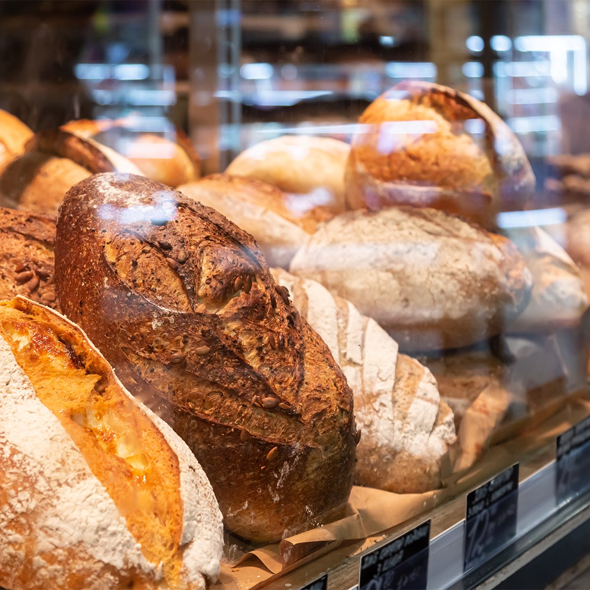
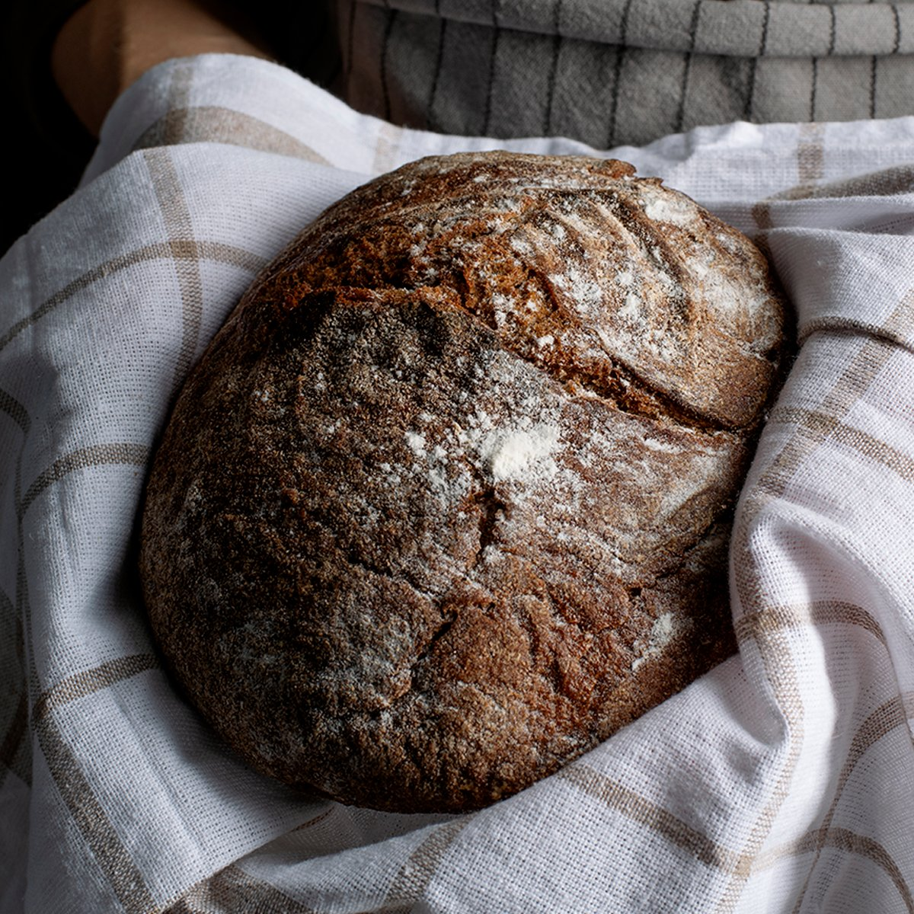

Our Products
Everything at North Star Bakery is baked in small batches throughout the day. The price ranges below will help you plan your visit or event. There is no online checkout on this site — just send us a pre-order request on our Contact and Pre-Orders page and we will have your items ready for pickup.
Your Favorites
You have not saved any favorites yet.
When you are ready, send a pre-order request and mention your favorites.
Breads

Our bread case changes with the seasons, but you can always count on hearty everyday loaves and weekend specials.
- Country Sourdough: Tangy, chewy, and naturally leavened. $6 to $9 per loaf.
- Honey Oat Loaf: Soft sandwich bread sweetened with local honey. $5 to $8 per loaf.
- Multigrain and Seeded Loaves: Hearty loaves packed with whole grains. $6 to $9 per loaf.
- Baguettes and Rolls: Crisp baguettes and soft dinner rolls. $3 to $6 each or per half dozen.

Pastries
Perfect for commuters, morning meetings, and slow weekend breakfasts with family.
- Croissants: Plain, chocolate, and almond. $3.50 to $5.50 each.
- Muffins and Scones: Rotating flavors such as blueberry, lemon, and cinnamon. $3 to $5 each.
- Cinnamon Rolls and Danish: Warm, spiced, and glazed to order. $4 to $6 each.
- Pastry Boxes: Assorted boxes for offices and gatherings. $18 to $36 per box.
Cakes and Special Orders
From birthdays to weddings, our bakers work with families and event planners to create cakes worth celebrating with.
- Everyday Cakes: Ready-to-go layer cakes for small gatherings. $24 to $40 each.
- Custom Celebration Cakes: Made to order in your choice of flavors and fillings. $45 to $120 and up, depending on size and design.
- Cupcakes: Sold by the half dozen or dozen for parties and events. $15 to $30 per dozen.
Please give us at least 48 hours of notice for custom cakes. Use our Contact and Pre-Orders form to tell us what you need, including any allergy notes, and we will confirm your order.